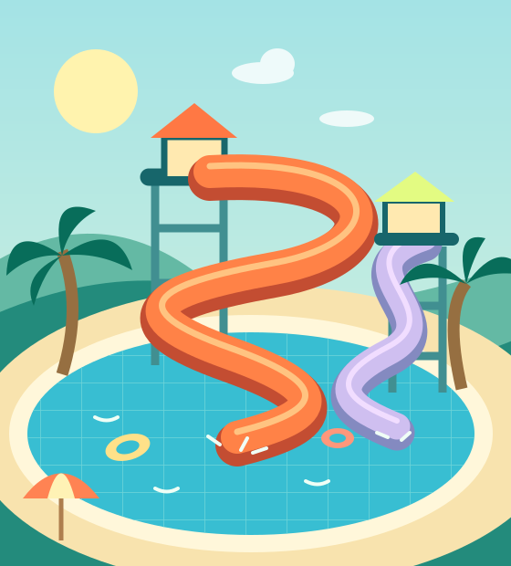

Van de wolken
naar het water.
Een glijbaan zo hoog als een flat. Bochten waar je van gaat gillen. En onderaan? Een héél grote plons.
GROOTSE PLANNEN. NOG GROTERE GOLVEN.
Een tropisch waterparadijs om de hoek. Van supersnelle glijbanen tot eindeloos dobberen: jouw nieuwe favoriete plek is dichterbij dan je denkt.
Pak je gratis abonnementEen heel jaar waterpret. Helemaal gratis.

DUIK IN JE NIEUWE ACHTERTUIN
Waarom ver weg gaan als een wereld vol waterpret straks gewoon om de hoek ligt?
Een glijbaan zo hoog als een flat. Bochten waar je van gaat gillen. En onderaan? Een héél grote plons.
Palmbomen, een warm strand en een luie rivier. In Meerstad is het in deze plannen elke dag zomer.
Na elke duik een ijsje? Natuurlijk! Met je abonnement zijn zelfs de ijsjes onbeperkt inbegrepen.
TE MOOI OM TE LATEN LIGGEN?
Alle glijbanen. Alle dagen. Alle ijsjes.
Claim vandaag nog jouw gratis jaarabonnement!